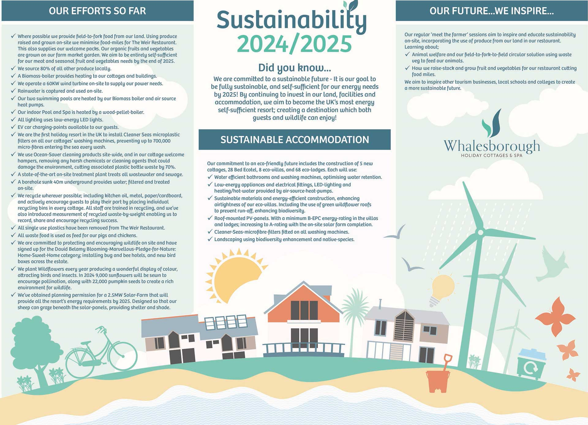
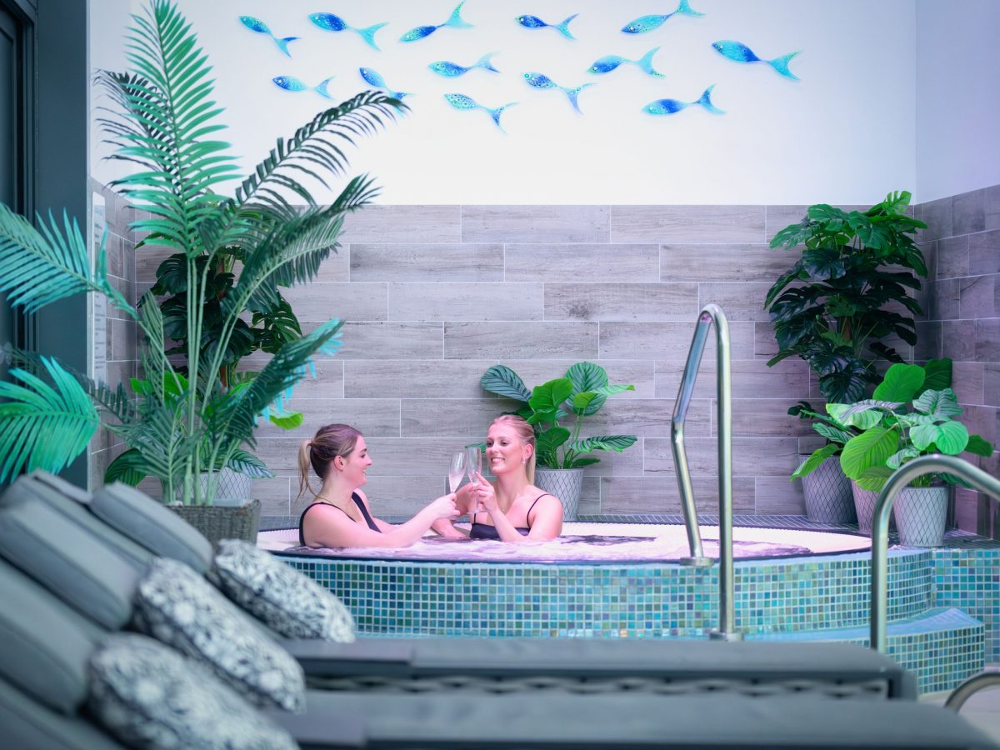
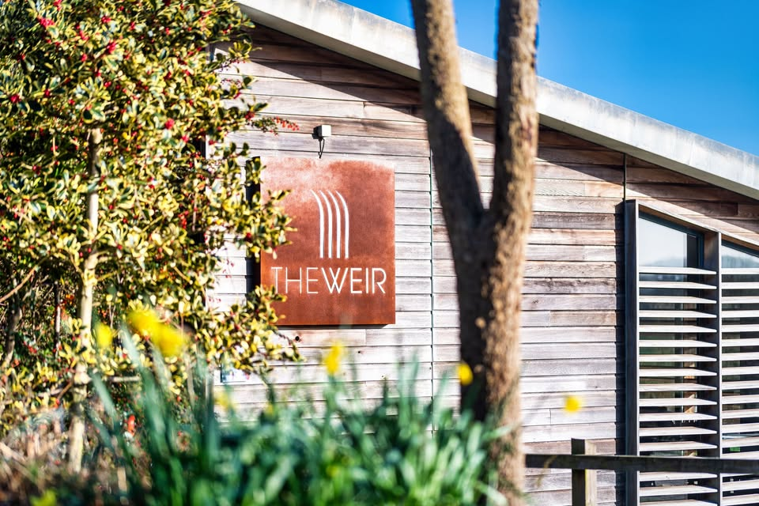
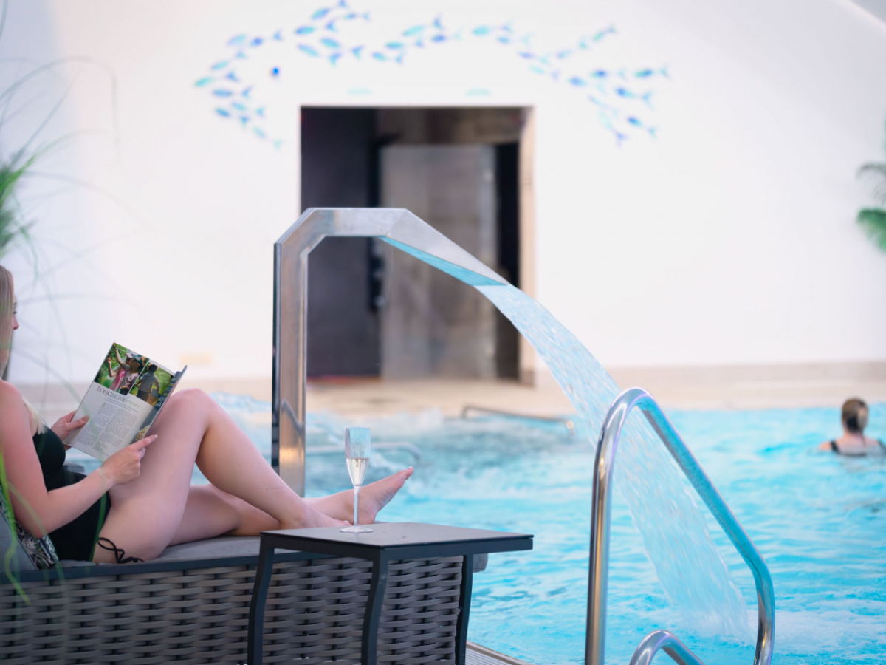

Sustainable Luxury Holidays · North Cornwall
Whalesborough is where the idea that luxury and sustainability are in tension goes to die. You do not have to choose between staying somewhere extraordinary and doing the right thing. Here, the two are the same thing.
The Argument
The luxury holiday industry has a complicated relationship with sustainability. Most resorts add a green tick to their marketing without changing what they do. We did it the other way around: we changed what we do, then told you about it.
Whalesborough Farm is a 450-acre working estate that has existed for centuries. Our relationship with this land is not decorative — it is fundamental. Which means sustainability is not a policy here. It is how a farm estate survives and thrives across generations.
What you get as a guest is luxury — genuinely world-class luxury — in a place that is actively improving the land around it. The hot tub, the spa, the private cottages, the restaurant. All of it powered by wind, heated by biomass, stocked from within Cornwall. That is not a compromise. That is what luxury looks like when it takes responsibility seriously.
The Three Pillars
Every single one of our 26 cottages has a Cleaner Seas microplastic filter fitted to its washing machine. A single wash releases up to 700,000 microfibres. Ours don't enter the water system. We were the first holiday resort in the UK to do this. No one else has matched it.
See the full credentialsOur 60kW wind turbine provides site-wide power. A biomass boiler provides district heating. Air source heat pumps heat the pools. We are 65% self-sufficient on energy and working toward full independence by 2027. The same wind you feel on the coastal path is powering your stay.
Energy roadmap50 acres of new woodland. 9,000 sunflowers for pollinators. 22,000 pumpkin seeds. Wildflower meadows managed for biodiversity. An organic market garden feeding our restaurant. We don't just preserve this land — we actively improve it. Every year it is better than the one before.
Rewilding programme
Why It Matters
The market for sustainable luxury is not niche anymore. Guests increasingly want to know that their holiday dollar is going somewhere it should go. Not into greenwashing PR. Into actual work.
Whalesborough is a Cornwall Tourism Award Gold winner for Sustainable Tourism. Our credentials are independently assessed, not self-certified. The microplastic filters are real and running. The wind turbine is real and spinning. The woodland was planted tree by tree.
When you stay here, the money you spend helps fund a working conservation programme on a 450-acre estate. The land you walk on is actively getting richer. The sea near where you swim is getting cleaner. We can prove all of it.
See Our Full Transparency ReportSustainable Dining
The Weir is a working paddock-to-plate restaurant, not a hotel dining room dressed up as one. 90% of everything served comes from within Cornwall. Meat from Phillip Warren — fourth-generation Cornish butchers sourcing rare-breed from farms in sight of the sea. Fish from Celtic Fish & Game in St Ives since 1885. Cheese aged and made on this estate.
The kitchen draws from the estate's organic market garden — the same sunflowers that feed the pollinators also feed the menu in season. The Weir changes with what's growing, what's been caught, and what Cornwall offers in any given week.
This is what sustainable luxury dining looks like: not a green logo on the menu, but a chef who knows the name of the farmer.
Explore The Weir Restaurant

Sustainable Wellness
The W Club Spa's pools, sauna, steam room, and treatment rooms are heated by our estate energy systems — air source heat pumps and biomass district heating. The botanicals used in Gaia spa treatments are sourced directly from the estate — sea kelp, wild rose, sea buckthorn, lavender.
A spa day at Whalesborough leaves a smaller footprint than almost anywhere comparable in the country. The luxury is real. The carbon isn't.
Explore the W Club SpaGo Deeper
Transparency Report
The full data — energy production, rewilding statistics, biodiversity targets, award recognition. Every number verifiable, every claim backed.
Read the report →Paddock to Plate
90% Cornish sourcing, 30% from the estate. Named suppliers, traceable ingredients, a chef who knows every farm on the menu.
Visit The Weir →Estate Botanicals
Gaia treatments using sea kelp, wild rose, sea buckthorn, and estate lavender. Powered by renewable energy. Luxurious without compromise.
Explore the spa →Gold Award · Cornwall Tourism Awards 2024/25
26 five-star cottages. 22 eco-apartment suites. A spa powered by wind and botanicals from the land. A restaurant that sources 90% within Cornwall. And 450 acres of active conservation right outside your door.
Gold
Cornwall Tourism Awards
Ethical, Responsible & Sustainable Tourism · 2024/25